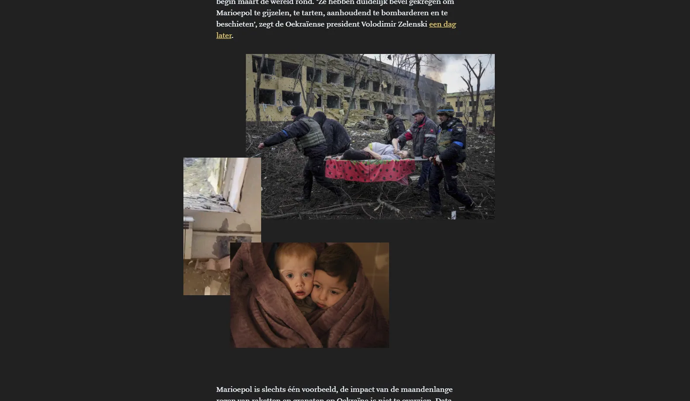
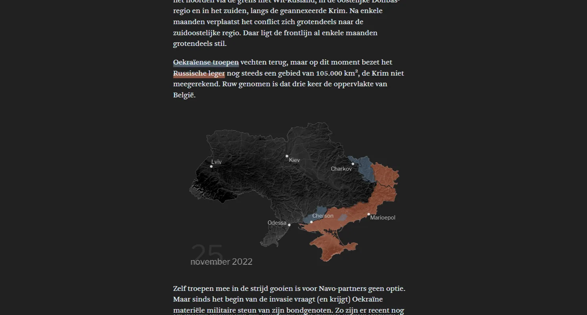

On the first anniversary of the Russian invasion, we told the story of the war in five figures: 1.2 million destroyed buildings, 18,955 civilian casualties, 8 million refugees, 105,000 km² of occupied territory, 350 billion dollars for reconstruction.


The whole project – text, design and development – was done together with Andy. The video footage came through Arno at the video desk. We were also proud of the animated map, built on ISW shapefiles and processed in QGIS and Python, which shows the frontline shifting day by day.
Made with
Made by
- Tina Boeykens
- Text, design & development
- Andy Stevens
- Text, map & development
- Arno Vanhollebeke
- Video